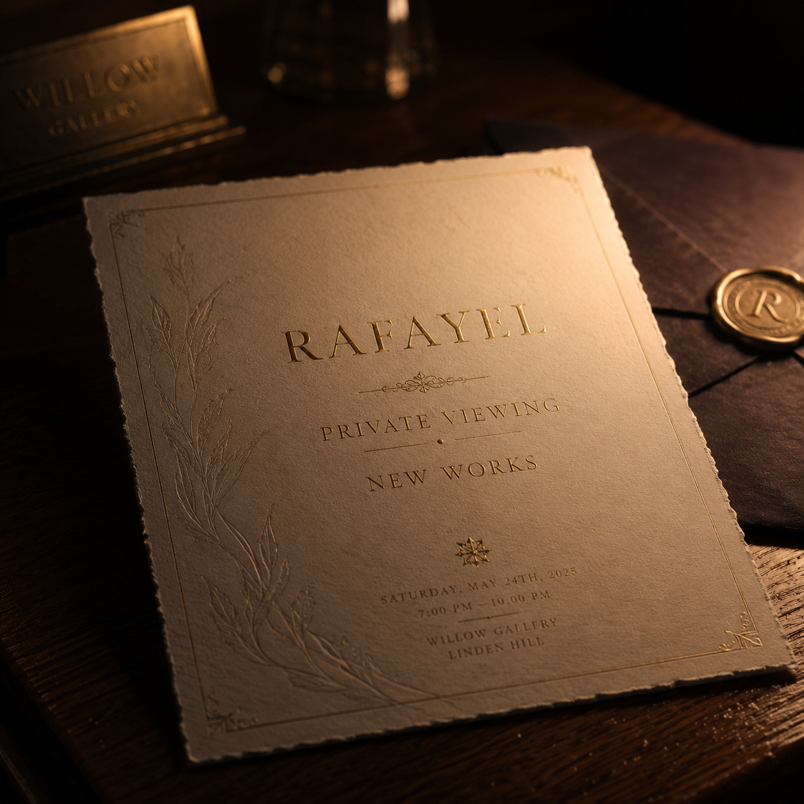
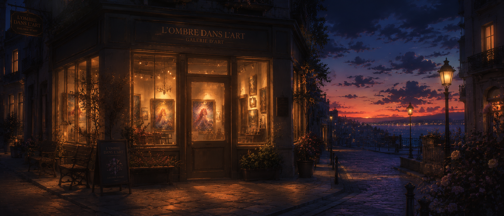
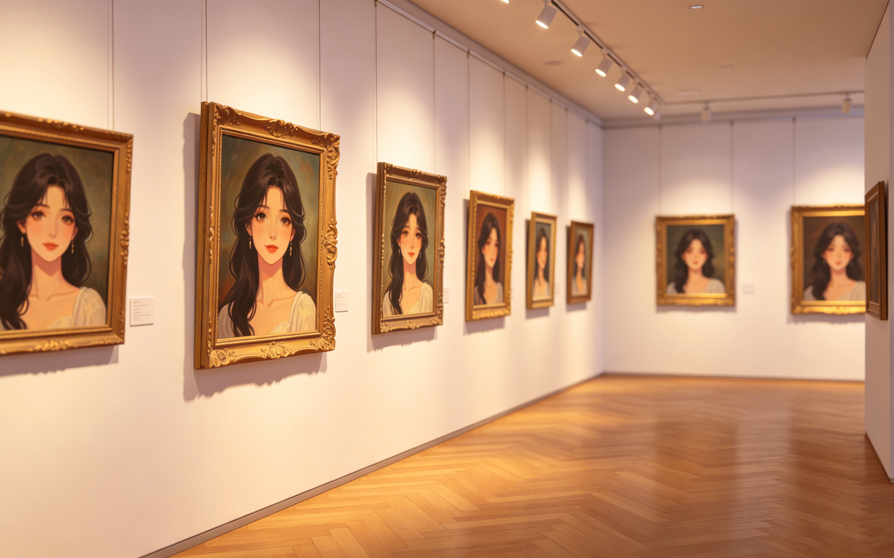
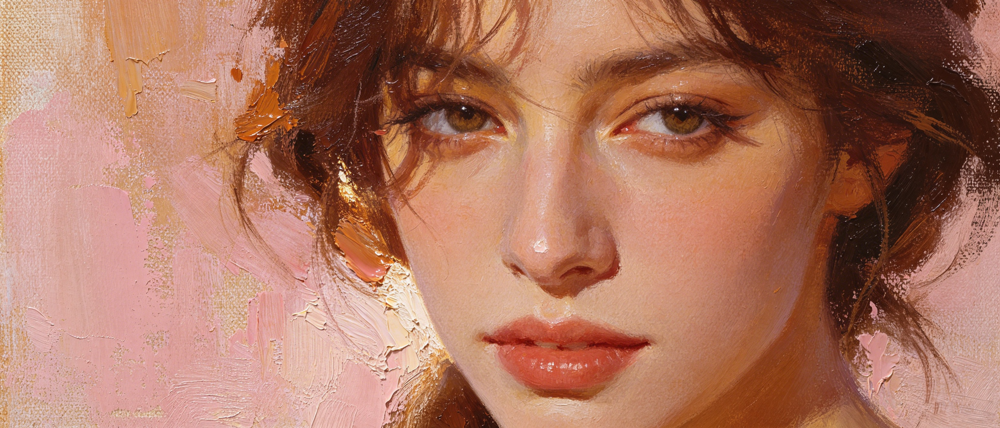
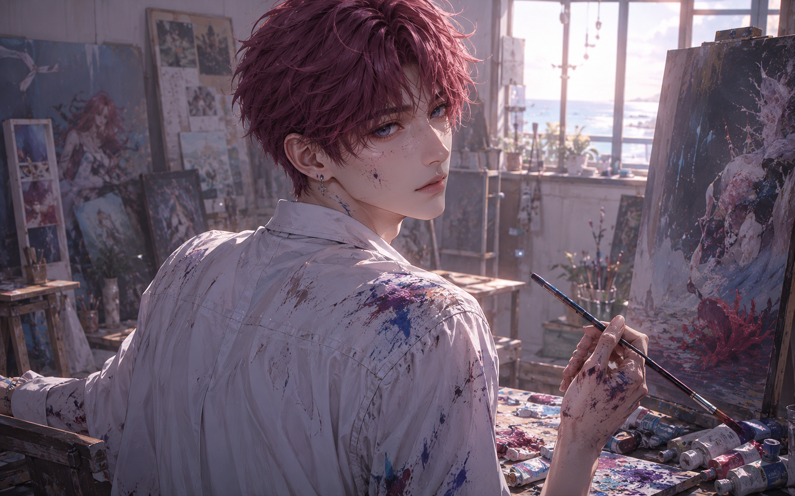
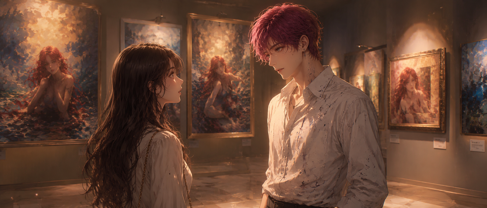
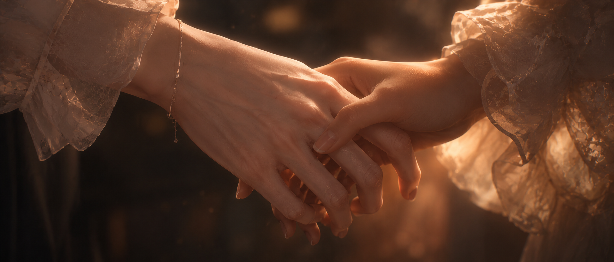
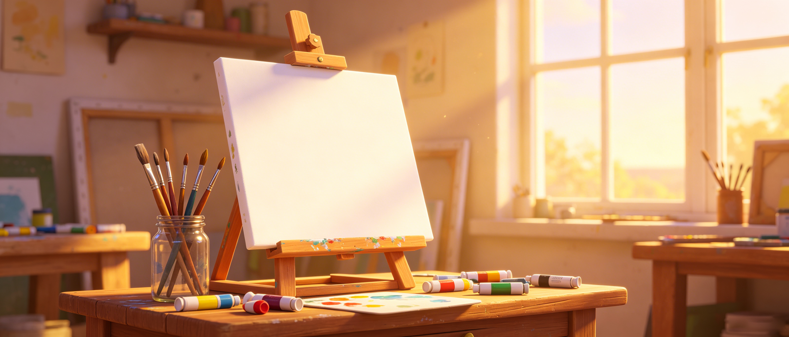
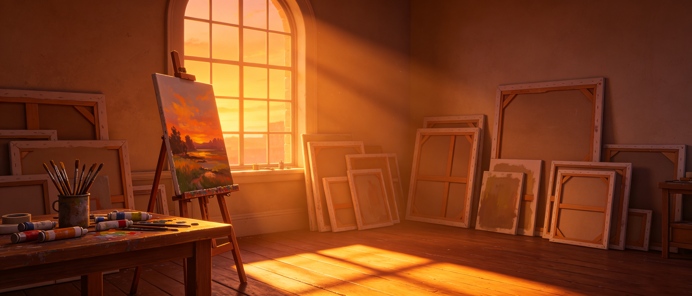

his first exhibition. all the paintings were of her. and she didn't even know his name.
he painted her for years before he knew her name.
on canvas after canvas. in oil. in watercolor. in charcoal. the same face. the same eyes. the same way she tilted her head when she was about to say something honest.
he told himself it was practice. told himself she was just a face he'd imagined. told himself it didn't mean anything.
it meant everything.
(this is the story of how she found out.)

she almost threw it away
the invitation arrived on a tuesday. thick cream paper. embossed letters. an address she didn't recognize. a name she'd never heard.
rafayel. private viewing. new works.
she almost threw it away. she didn't know any artists. didn't go to gallery openings. didn't understand why someone would send her an invitation.
but there was something about the name. rafayel. it felt familiar in a way she couldn't explain. like a song she'd heard once. long ago. in a dream.
she put the invitation on her fridge. forgot about it. found it again three days later.
the address was across town. the date was that night.
"what's the worst that could happen," she said to no one. put on a coat. went.

the gallery was small. quiet. tucked between buildings. easy to miss. she almost missed it.
the gallery was small. tucked between a bookstore and a coffee shop. warm light spilled from its windows. inside, she could see paintings. lots of them.
she hesitated at the door. almost turned around.
then she heard someone laugh inside. a warm sound. unguarded. she pushed the door open.

canvas after canvas. the same face.
the room was small. white walls. soft lighting. maybe twenty paintings, hung with care.
she walked to the first one. stopped.
it was a woman. oil on canvas. dark hair. light eyes. standing by a window, looking out at the sea.
the woman looked like her.
not exactly. the hair was darker. the face was softer. but the eyes. the way she held herself. the tilt of her chin.
it was her. or someone who could have been her. someone she might have been in another life.
she moved to the next painting. a woman sitting on a beach, knees pulled to chest, watching the waves. same face. same eyes.
the next. a woman in a crowded street, looking back over her shoulder, almost smiling. her.
painting after painting. all of the same woman. all of her.

the details were intimate. the curve of her jaw. the way her hair fell across her face.
her heart was beating too fast. she didn't understand. she'd never met this artist. never posed for him. never seen his face.
so how did he know her?
she reached the last painting. it was the largest. almost life-sized. a woman standing at the edge of a cliff, looking out at a stormy sea, wind in her hair. her.
there was a title card beside it.
the one i've been waiting for. oil on canvas. 2024.
her hands were shaking.

he didn't know she was coming
"you're not supposed to be here yet."
she turned. a man stood in the doorway. young. dark pink hair. ocean-colored eyes. paint on his hands. on his shirt. on his face.
he looked at her. then at the paintings. then back at her.
"you came," he said. like he couldn't believe it.
"i don't know you."
"i know."
"then why —" she gestured at the walls. at all the paintings. at herself. "why do i look like this?"
he didn't answer. walked past her to the largest canvas. stood in front of it. back to her.
"i've been painting you for years," he said quietly. "before i ever saw you. i just... knew your face. like i'd been carrying it with me my whole life."
"that's not possible."
"i know."

they stood facing each other. strangers. but not.
she should have left. should have walked out. called the police. something. anything other than standing there, staring at a man who'd painted her face a hundred times without her permission.
but she didn't move.
"who are you?" she asked.
he turned to face her. "rafayel."
"that's not what i meant."
"i know."
he stepped closer. not threatening. just... closer. close enough that she could see the paint under his fingernails. the exhaustion in his eyes. the hope.
"i've been waiting for you," he said. "i didn't know i was waiting. but i was. every painting. every brushstroke. i was trying to find you."
"that doesn't make sense."
"none of this makes sense."
she looked at the paintings again. the woman on the cliff. the woman in the crowd. the woman by the window. her. all of them her.
"how long?" she asked.
"years."
"how many?"
he hesitated. "i stopped counting."
* * *
his hands were stained with years of searching
she sat down on a bench in the center of the room. stared at the largest painting. the one with the title that made her chest ache.
"the one i've been waiting for," she read aloud. "that's... me?"
"i think so."
"you think so?"
"i've never been sure. until now."
he sat down on the bench beside her. not too close. left space between them. like he was giving her room to run.
she didn't run.
"tell me everything," she said.
and he did.
he told her about the dreams. the ones he'd had since he was a child. always the same. a city under the sea. coral walls. light filtering through water. and her. standing in the middle of it all. waiting.
he told her about waking up with her face in his mind. about picking up a brush for the first time just to get her out of his head. about how she never left.
he told her about the years of searching. the gallery openings he went to, hoping she'd walk in. the cafes he sat in, watching the door. the way strangers' faces would sometimes look like hers for a moment, and his heart would stop.
he told her about almost giving up. about packing away his paints. about the night he decided this was the last exhibition. the last time he'd show her face to strangers. the last time he'd hope.
"and then you came," he said.
a city under the sea. coral walls. light filtering through water. and her.
she listened. didn't interrupt. didn't say it was crazy. didn't leave.
when he finished, the gallery was dark outside. the only light came from the paintings. from his eyes.
"do you believe me?" he asked.
she thought about it. about the dreams she'd had. the ones she never told anyone. the ones where she was standing in a sunken city, waiting for someone who never came.
"i think," she said slowly, "i've been waiting for you too."
he stared at her.
"i didn't know it," she continued. "but i think i have. my whole life. i just didn't know what i was waiting for."
he reached out. hesitated. his hand hovered between them.
she took it.
his fingers were warm. calloused from years of holding brushes. shaking, just a little.
"i never thought you'd actually come," he whispered.
"i almost didn't."
"why did you?"
she looked at the paintings. at her own face, staring back at her from a dozen canvases. "because i wanted to know who was looking for me."

his hand fit perfectly in hers. like it had been waiting too.
they stayed in the gallery until dawn. talking. not talking. sitting in silence that wasn't uncomfortable.
when the sun rose, light spilled through the windows and turned the paintings gold.
"what happens now?" she asked.
"i don't know," he said. "i never planned past this part."
she smiled. "then let's figure it out together."
he looked at her. really looked. like he was memorizing her face. even though he'd already painted it a hundred times.
"okay," he said.
and that was the beginning.

a new canvas. a new painting. a new beginning.
months later, she visited his studio for the first time. canvases everywhere. paints everywhere. and on the easel, a new painting. unfinished.
it was her. but different from the others. this one was smiling. really smiling. not the careful smile she used for strangers. the real one. the one she only showed when she forgot to perform.
"when did you paint this?" she asked.
"last week. you were laughing at something stupid i said. i painted it from memory."
she looked at the painting. then at him. "it's beautiful."
"you're beautiful."
she rolled her eyes. "that's cheesy."
"i know." he grinned. "but it's true."
she walked around the studio. looked at the older paintings. the ones from before. the ones where her face was slightly wrong. slightly off. like he hadn't quite found her yet.
"you got better," she said.
"i found the right model."
she laughed. the real laugh. the one he'd painted.
he watched her. cataloging every detail. the way she moved. the way her hair fell. the way she looked at his paintings like they mattered.
he would paint this moment later. when she was gone. when the memory was fresh. when he could still feel the warmth of her presence in the room.

the studio was messy. chaotic. full of unfinished things. it felt like home.
"rafayel?"
"yeah?"
"i'm glad i didn't throw away that invitation."
he smiled. soft. private. like a secret only she was allowed to see.
"i'm glad you didn't either."
outside, the sun was setting. the studio was golden. the paintings glowed.
and for the first time in years, the canvas on his easel wasn't a search.
it was a home.
the end.
(he's still painting her. she still doesn't know how to pose. they're figuring it out together.)